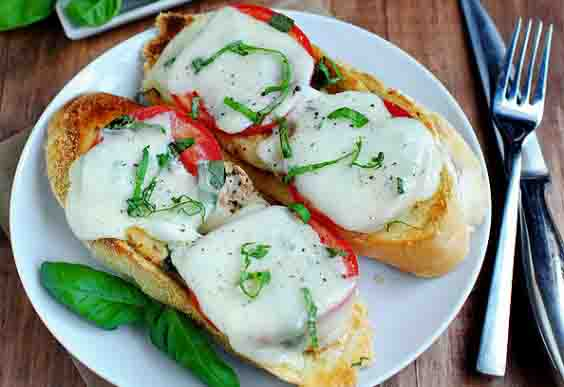

26 Quick and Easy Dinners Ready in 15 Minutes or Less

We’ve all been there: You’re home late from work, bordering on hangry—if you don't have a meal in less than 20 minutes, you might go into Hulk mode. You think your only quick-fix options are delivery (which starts to cut into your budget) or a frozen entrée (which never seems to satisfy).
New plan: Head to the kitchen. There are plenty of healthy dinners you can whip up with minimal ingredients—many that you likely have on hand—in 15 minutes tops. Whether burgers are calling your name, soup sounds ideal, or only cheesy pasta will do, you can prep, cook, and devour in no time by choosing one of these fast foods. And no worries: While they're ready in a flash, they don't scrimp on taste.